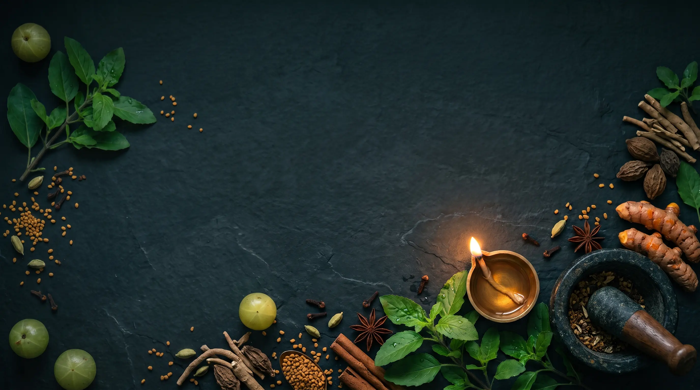
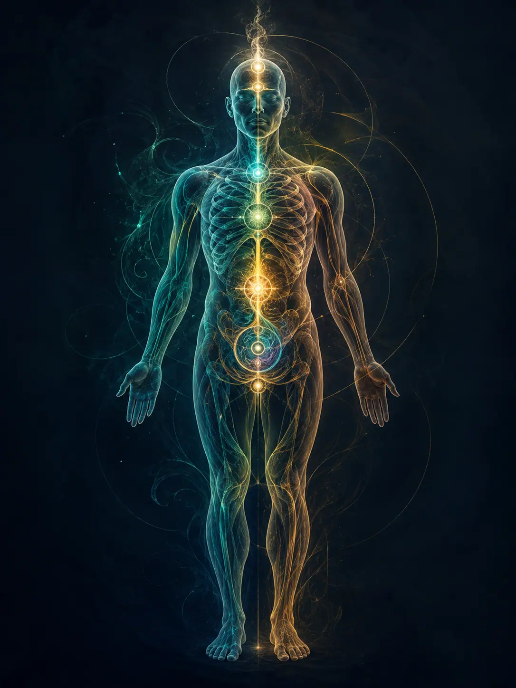
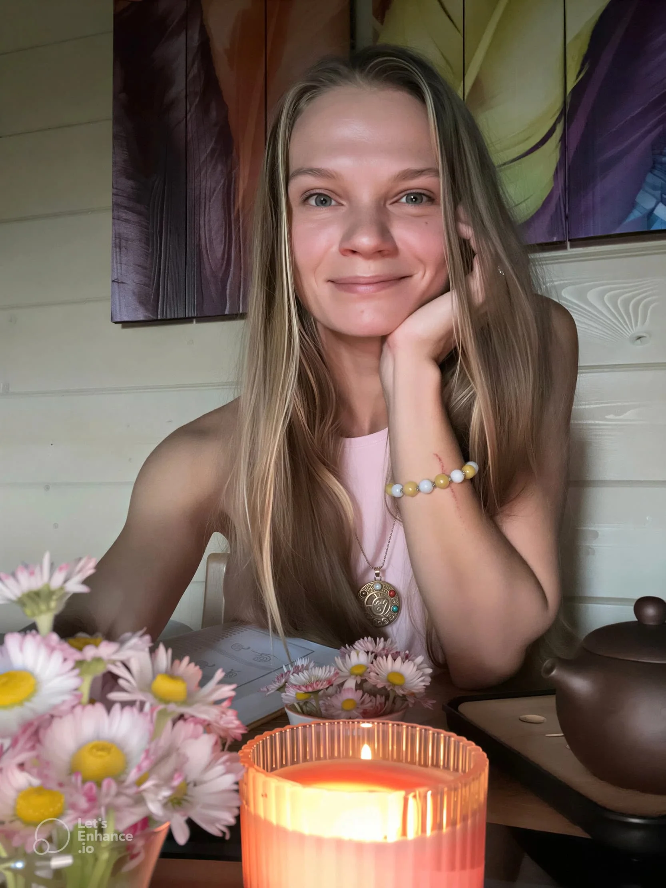
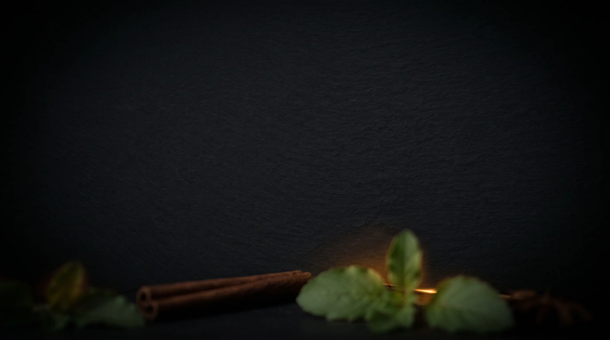

В переводе с санскрита означает «знание жизни» (от ayus — жизнь и veda — знание). Это не просто система лечения, а философия качества жизни, помогающая сохранять здоровье, энергию и ясность ума до глубокой старости.
Аюрведа — древняя система оздоровления, зародившаяся в Индии более 5 000 лет назад. Эта наука представляет собой не устаревшую архаичную медицину, а проверенное тысячелетиями фундаментальное исследование природы человека и живую практику применения холистического подхода, успешно помогающую обретать баланс и исцеление в современном мире.
На санскрите Аюс означает не просто биологическую жизнь или наличие пульса, а всю полноту соединения души, ума, чувств и физического тела. Аюрведа охватывает каждый из этих уровней, не разделяя их.
Состояние ума и качество мыслей напрямую формируют физиологию через три ментальные силы (гуны) и биоэнергетические принципы (доши). Хронический ментальный застой неизбежно оседает в теле в виде панцирей и блоков, а телесные зажимы сковывают свободу ума.
Мы «едим» не только еду на тарелке, но и всё, что воспринимаем органами чувств: звуки, слова, образы, эмоции. То, как ум переваривает жизненные впечатления, так же важно, как переваривание обеда.
Человек рассматривается не изолированно, а как часть большого космоса. Смена сезонов, суточные биоритмы, погода и даже расположение планет — всё это напрямую резонирует с нашей внутренней конституцией.
Цель подхода заключается не просто в устранении боли, а в глубокой укорененности человека в своей природе, где тело становится прозрачным инструментом, а ум обретает стабильную тишину.
Эти концепции — не абстрактная философия, а то, что вы испытываете прямо сейчас. Гуны определяют ясность и тяжесть ваших мыслей, а Доши — температуру, напряжение и форму вашего тела.
Состояние ясного покоя, баланса и вдохновения.
Вы просыпаетесь отдохнувшим, чувствуете внутреннюю тишину и глубокое доверие к миру. Проблемы решаются без надрыва, а ум работает кристально чисто.
Состояние застоя, тяжести и ментального тумана.
В жизни проявляется как апатия, хроническая лень и отсутствие сил. Вы можете часами листать ленту или лежать на диване, не чувствуя от этого отдыха. Мысли вязкие, а тело ощущается тяжелым и неповоротливым.
ВЕТЕР И ДВИЖЕНИЕ
Энтузиазм, легкость на подъём, креативность, быстрая адаптация.

Состояние непрерывной гонки, тревоги и гиперконтроля.
Жизнь на высоких оборотах: страх упустить время, суета в голове, неумение расслабляться. Ум мечется между сожалениями о прошлом и страхами за будущее. Кажется, что если остановиться хотя бы на минуту — всё рухнет.
ЗЕМЛЯ И СТРУКТУРА
Спокойствие, выносливость, сильный иммунитет, глубокий сон.
ОГОНЬ И ТРАНСФОРМАЦИЯ
Острый интеллект, целеустремленность,
сильное пищеварение, харизма.
Простой и понятный путь к вашему балансу — от первого сообщения до устойчивых изменений.

Заполняете подробную анкету до встречи. Рассказываете, что беспокоит. Я отвечаю, помогаю выбрать формат — разовую консультацию или программу.
Подбираем удобное время для онлайн-встречи в Zoom или Telegram.
Созваниваемся на 60 минут в Zoom, разбираем причины вашего состояния. Вместе смотрим вашу конституцию, текущий баланс, привычки. Я даю рекомендации по питанию, режиму или йоге — под ваш тип и запрос.
Готовый план, списки продуктов, видео с практиками — чтобы вы ничего не забыли.
Начинаете с малого. Наблюдаете. Если выбрали программу — мы корректируем план на следующих встречах.
Я предлагаю базовые (разовые) консультации для быстрой помощи и глубокое сопровождение для тех, кто хочет системных изменений.
Понимание, почему вы мерзнете, пока другим жарко; почему вы набираете вес от одного взгляда на еду или, наоборот, не можете набрать ни грамма. Что вы получите:
Для тех, кто хочет разобраться, какая еда становится для вас лекарством, а какая — создаёт нагрузку и токсины. У кого частые вздутия, тяжесть после еды, изжога, нестабильный стул или просто хочется есть с пользой и удовольствием.
Вы научитесь питаться вкусно и сытно, сохраняя легкость и энергию. Что вы получите:
Для тех, кто занимается йогой или хочет начать, но не знает, какие позы полезны, а какие могут навредить при вашей конституции.
Результат: ваша практика становится целенаправленной и работает на ваше здоровье. Что вы получите:
Для тех, кто чувствует разбитость по утрам, сбитый график, трудности с засыпанием или хочет структурировать день без стресса.
Результат: вы получаете чёткий «распорядок дня» и понимаете, как природные циклы помогают вам быть энергичным. Что вы получите:

Если вы не знаете, какой формат выбрать, советую начать с «Экспресс-определения доши». Это та самая база, от которой отталкиваются все остальные рекомендации.